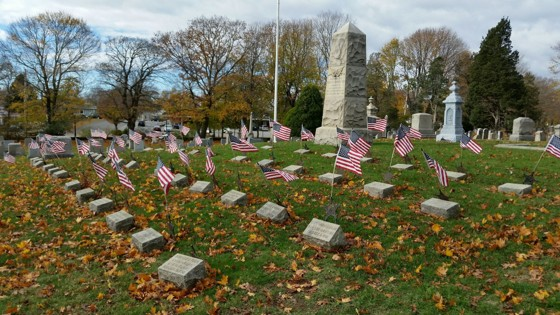

Honoring the men and women of Barrington, Rhode Island who gave their lives in service to the United States from the Revolutionary War through Grenada.
"May Their Memories Be Eternal"

From the American Revolution to modern conflicts, the citizens of Barrington, Rhode Island have answered the nation's call to service. This archive preserves the stories of those who made the ultimate sacrifice in defense of their country and community.
This project pulls from archival data and historical documents to build the following historical narratives to honor the memories of the men listed on the memorial banners that annually line the streets of the town center during the month of May.